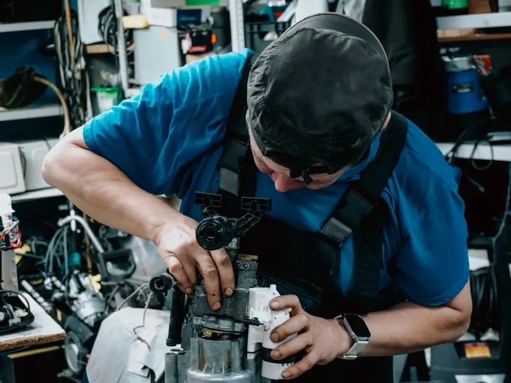
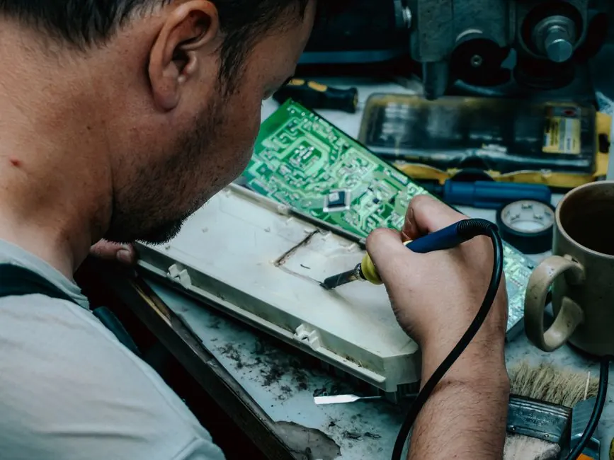
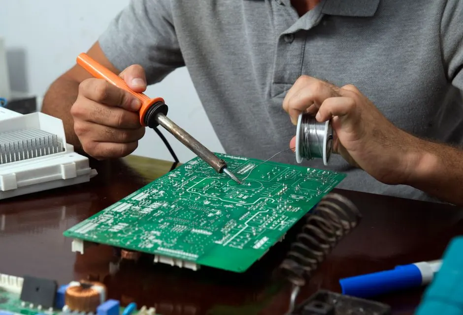

Comprehensive Inspection
We perform a thorough inspection of all components, including the heating element and thermal fuse.
Dryer Not Heating Repair Littleton CO is crucial for homeowners experiencing heating problems. Our Dryer Heating Problem Service in Littleton provides fast and reliable repairs to restore your appliance's efficiency.

Dryer Not Heating Repair Littleton CO involves diagnosing and fixing issues that prevent your dryer from producing heat. Common causes include a faulty heating element, thermal fuse, or vent duct obstruction. This service ensures your dryer operates efficiently, saving you time and energy.
Local Littleton customers often face dryer heating problems due to lint buildup or aging appliances. Our Dryer Heating Problem Service Littleton addresses these issues promptly, providing effective solutions to restore your dryer's functionality and prevent costly replacements.
Our Dryer Not Heating Repair service includes a comprehensive inspection, diagnosis, and necessary repairs. We address all potential issues, ensuring your dryer operates safely and efficiently.
We perform a thorough inspection of all components, including the heating element and thermal fuse.
Our technicians accurately diagnose the heating problem, providing you with a clear understanding of the repairs needed.
We use high-quality parts for all repairs, ensuring long-lasting results.
After repairs, we conduct final testing to ensure your dryer is heating properly before we leave.
We start with a phone consultation to understand the symptoms you're experiencing with your dryer. This helps us prepare for the service.
Our technician arrives at your location in Littleton and conducts a thorough inspection of your dryer to identify the heating issue.
After diagnosing the problem, we provide a detailed estimate for the necessary repairs, ensuring transparency before any work begins.
Once you approve the estimate, our technician will repair your dryer using high-quality parts, such as a new heating element or thermal fuse.
We conduct thorough testing to ensure your dryer is heating properly before leaving. Customer satisfaction is our top priority.

We start with a phone consultation to understand the symptoms you're experiencing with your dryer. This helps us prepare for the service.
Used to test electrical components like the heating element and thermal fuse.
Essential for accessing internal components during repair.
Used for cleaning lint buildup in the dryer and vent system.
Helps remove lint from the dryer vent to prevent blockages.

A homeowner in Littleton reported their dryer was running but not producing heat, leading to damp clothes.
After: After our repair, the dryer heated up properly, drying clothes in one cycle, saving the homeowner time and energy.
Book this service →
A family noticed their dryer was taking multiple cycles to dry clothes, leading to frustration.
After: Post-repair, the dryer provided consistent heat, drying clothes effectively in one cycle.
Book this service →
A homeowner faced frequent overheating issues due to lint buildup in the vent.
After: After our thorough cleaning and repairs, the dryer operated safely and efficiently without overheating.
Book this service →Our Dryer Not Heating Repair services address several common issues that can disrupt your laundry routine.
Ask a pro →Our technicians diagnose the cause, whether it's a faulty heating element or thermal fuse, and perform the necessary repairs.
We identify and fix issues with the heating element or vent obstructions to ensure consistent performance.
Our team provides thorough cleaning and maintenance to prevent lint buildup and ensure safe operation.
$180 - $450 depending on scope
Pricing for Dryer Not Heating Repair Littleton CO varies based on the complexity of the issue and parts required. Typical costs range from $180 to $450. Factors like the brand of your dryer, accessibility of components, and urgency of service can affect the final price.
Our transparent pricing ensures you know what to expect, making it easier to budget for necessary repairs.
More complex repairs, like replacing the heating element, may cost more than simple fixes.
Get a quote ↗Certain brands may require specialized parts that can influence the overall cost.
Get a quote ↗After-hours or same-day service requests typically incur additional fees.
Get a quote ↗“I had a great experience with Dryer Repair Littleton Pros. They quickly diagnosed the issue with my dryer not heating and had it fixed the same day!”
Sarah T.Homeowner, Littleton Village
✓ Verified“The team was professional and efficient. They explained everything clearly and my dryer is working like new again!”
Mike L.Homeowner, Downtown Littleton
✓ Verified“I highly recommend their services. They were prompt and the price was fair. My dryer is heating perfectly now!”
Jessica R.Homeowner, South Broadway
✓ VerifiedIf your dryer is not heating, check the thermal fuse and heating element. If these components are intact, call a professional for Dryer Not Heating Repair in Littleton CO.
The cost for Dryer Not Heating Repair Littleton CO typically ranges from $180 to $450, depending on the specific issue and parts needed.
Yes, we offer a comprehensive Dryer Heating Problem Service in Littleton, addressing all common issues that prevent your dryer from heating.
You can find affordable Dryer Not Heating Repair in Littleton by contacting us for a free estimate and same-day service options.
Don't let a faulty dryer disrupt your routine. Contact us now for reliable and efficient Dryer Not Heating Repair Littleton CO.
Schedule Your Repair 720 216355928 →We're here to help with your dryer repair needs. Reach out to us during business hours, and we'll respond promptly.